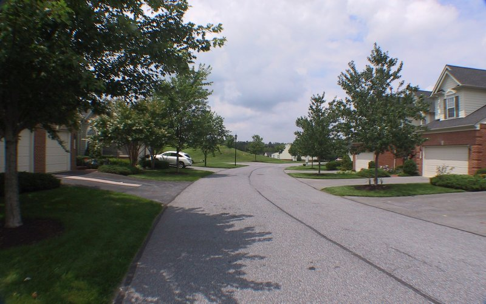

Age Restriction

Basic Summary of Condo Regime Age Requirements
- Age Qualified Resident - One person living in each home who is fifty-five (55) years of age or older;
- Qualified Residents - Relatives of the age qualified resident who are eighteen years of age or older;
- No one under age eighteen (18) can live or visit in the home for more than sixty (60) days per calendar year.
- Qualified residents living with the age qualified resident at the time of his/her death, divorce, incapacity or placement in an extended care facility,
- The Condominium Board can require proof of age of all occupants.
- Exceptions:
- A person under the age of eighteen (18) years who is needed to provide a reasonable accommodation to a handicapped qualified resident,
- A handicapped dependent of an qualified resident.
As per the Condominium Declaration:
(i) For purposes of this Article II (c), the following terms shall have the following meanings:
(b) "Qualifying Resident" shall mean an owner or occupant of a Unit who meets one of the following requirements:
- as residing with the Age Qualified Resident in the Unit prior to the placement of the Age Qualified Resident in a facility for the care of the elderly or the disabled; or
- was the spouse of the Age Qualified Resident and was residing with the Age Qualified Resident in the Unit prior to the dissolution of the marriage with the Age Qualified Resident.
(ii) The Condominium is intended to constitute housing intended and operated for occupancy by at least one person fifty-five (55) years of age or older per Unit, to the extent required by the federal Fair Housing Act, 42 U.S.C. §3601, et seq., and Art. 49B §19 et seq., of the Annotated Code of Maryland, as such laws are amended from time to time (collectively, the "Fair Housing Acts"). Except as provided herein, occupancy of any Unit shall be in accordance with the Fair Housing Acts.
(iii) Subject to the Fair Housing Acts, a Qualifying Resident who is eighteen (18) years of age or older may continue to occupy a Unit, without Condominium Board approval, following the death or departure, by reason of divorce or incapacity, of the Age Qualified Resident. Persons eighteen (18) years of age or older (a "Permitted Resident") may occupy a Unit with an Age Qualified Resident, without the approval of the Condominium Board, so long as the Age Qualified Resident at all times resides in the Unit with such Permitted Resident.
(iv) Notwithstanding anything to the contrary contained herein, no Unit may be occupied by any person under the age of eighteen (18) years unless such person is (i) necessary to provide- a-reasonable-accommodation to a handicapped Age Qualified Resident or Qualifying Resident, or (ii) is a handicapped dependent of an Age Qualified Resident or Qualifying Resident, to the extent required by the provisions of the Fair Housing Acts.
(v) Nothing contained in this Article shall be deemed to prohibit the visitation by persons not otherwise permitted to occupy a Unit (including persons under the age of eighteen (18)) who are the family members or guests of the owner or occupant of a Unit, provided that such visitation shall not be for more than (60) days in any calendar year.
(vi) Once the Condominium Board has granted a request pursuant to this Article, the Board of Director's permission with respect to the person who was the subject of the request may not be rescinded for so long as such person continually occupies the Unit he or she began occupying upon the granting of the Board of Director's approval.
(vii) Each Owner or occupant of a Unit, if requested to do so by the Condominium Board, shall furnish the Condominium Board with the names and ages of all occupants of the Unit and such affidavits and other documents as the Condominium Board may request to verify the age of such occupants.
(viii) The Condominium Board may adopt, publish and enforce such policies and procedures and rules and regulations as are deemed necessary by the Condominium Board in order to demonstrate an intent to maintain the status of the Condominium as housing for older persons under the Fair Housing Acts. Such policies and procedures may provide for verification of the age of the occupants by reliable surveys and affidavits.
(ix) The requirements contained in this Article are intended to comply with the exemption requirements under the Fair Housing Acts and any regulations issued thereunder. Notwithstanding anything contained herein to the contrary, all Unit Owners acknowledge and agree that although it is the intent of the Condominium Developer that the Condominium is to be operated in compliance with the Fair Housing Acts, which exempt "housing for older persons" from the prohibitions against discrimination because of familial status, no representation or warranty is made that the Condominium complies or will comply with the Fair Housing Acts, and if for any reason the Condominium is deemed not in compliance with the Fair Housing Acts and, therefore, not exempt from the prohibitions against discrimination because of familial status, neither the Condominium Developer nor the Condominium Association nor their respective directors, officers, agents or employees shall have any liability in connection therewith. Notwithstanding any other provision of this Declaration to the contrary, the Condominium Developer, so long as the Condominium Developer owns any Unit, and thereafter the Condominium Board, may amend the provisions of this Article and/or promulgate rules and regulations to the extent that it deems it necessary or appropriate, without the approval of the Unit Owners, in order to comply with the exemption requirements under the Fair Housing Acts and any regulations promulgated thereunder. Such amendments, rules or regulations by the Condominium Developer or Condominium Board may include, without limitation, permitting additional exceptions to the age restrictions hereunder which are consistent with the Fair Housing Acts and any regulations promulgated thereunder.
Website hosted on GitHub